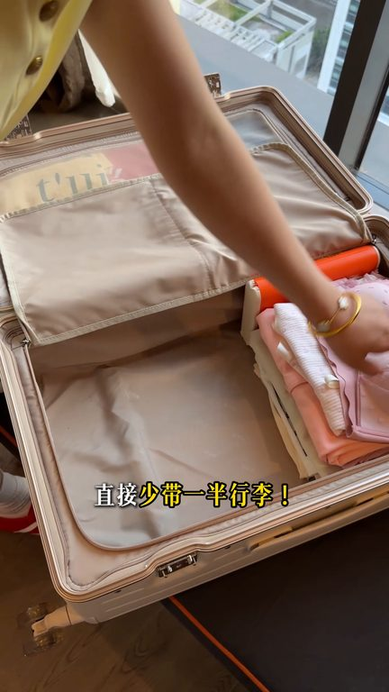
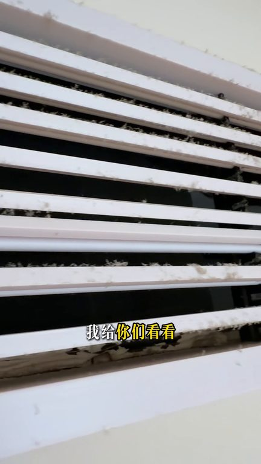
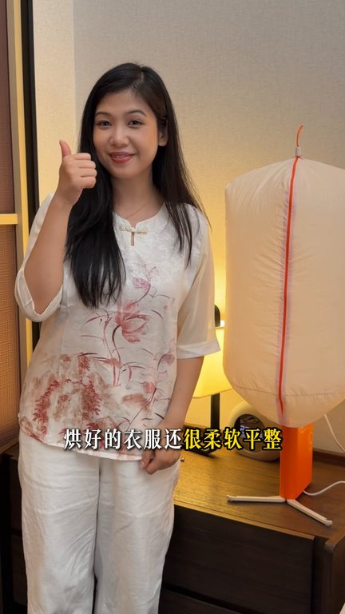

TOP 1 · 代表素材深度拆解
核心放量 点击承压
视频为原始素材 HTTPS 链接；点击后加载，建议在网络环境良好时播放。
33.8万素材消耗
2.71%CTR
12.0%类目消耗占比
-0.50pp较类目均值
表现判断
该素材是类目内第 1 名，属于“核心放量”；CTR 低于类目均值。消耗体现承接规模，CTR 体现首屏与定向效率，两项应结合判断，不能仅以单指标下结论。
表达标签
口播三段式证据
开场钩子誰懂啊跟開智的男人旅行直接手帶一半行李以前我倆出門旅行七天光是換洗衣服就要脫兩個大個行李箱現在啊帶兩三套衣服就夠囉多虧了這個巴掌大的小玩意兒簡直就是頸部神器當天洗的衣服當天混乾就能穿了
中段论证這個又危險又不衛生我給你們看看為了乾淨健康我也跟風買過一款掛式的烘乾機誰知道能插電的四周都掛不起來啊掛了幾個地方都一樣真的沒招了終於找到可能掛的地方但四周都沒插座了氣得直接丟了開了智的男人買的這款帶著支架的在酒店隨便找個角落都能立著烘哪哪都能用使用完全沒限制這個設計師有點東西打開可以拉出伸縮量一架雙層大容量的我跟老公的衣服都可以一次性烘乾還能邊烘乾邊紫外線殺…
结尾转化伸縮一架保溫帶支架電源線都可以隱藏在機身裡面折疊起來就八長大小放背包放行李箱都不占地老公說當時進直播間買的領了張300的大額優惠券奧首家太驚喜了還升級發了全球電壓通用版的能上飛機能上高鐵剛好下子去Race也不用額外花錢買國外版了啦還送22件旅行坦實用的大禮包經常出差旅遊的姊妹福利部的人抓緊去看看吧
有效点
- 消耗占比 12.0% 说明具备投放承接能力，但 CTR 较类目均值低 0.50pp
- 包含使用或实测表达，能够把抽象卖点转化为可感知证据
迭代动作
- 重做前 3–5 秒：结果前置、缩短背景铺垫，并把核心人群直接写进首屏字幕
- 视频时长偏长，建议剪出 30–45 秒短版，仅保留钩子、两项证据和一次 CTA
- 促销口径与资质信息保持同屏可验证，结尾只保留一个明确行动指令
合规关注

钩子建立 · 3.6s

场景/问题展开 · 27.4s

卖点证据 · 63.0s
转化收口 · 86.7s
查看完整口播摘要
誰懂啊跟開智的男人旅行直接手帶一半行李以前我倆出門旅行七天光是換洗衣服就要脫兩個大個行李箱現在啊帶兩三套衣服就夠囉多虧了這個巴掌大的小玩意兒簡直就是頸部神器當天洗的衣服當天混乾就能穿了以前老公喜歡的衣服傻傻的用風口吹一個多小時手抽筋的衣服還沒乾透為了省電視還扶我掛空調出風口吹這個又危險又不衛生我給你們看看為了乾淨健康我也跟風買過一款掛式的烘乾機誰知道能插電的四周都掛不起來啊掛了幾個地方都一樣真的沒招了終於找到可能掛的地方但四周都沒插座了氣得直接丟了開了智的男人買的這款帶著支架的在酒店隨便找個角落都能立著烘哪哪都能用使用完全沒限制這個設計師有點東西打開可以拉出伸縮量一架雙層大容量的我跟老公的衣服都可以一次性烘乾還能邊烘乾邊紫外線殺菌除滿的定時烘好自動關機的睡醒一覺衣服都乾得透透的啦烘好的衣服還很柔軟平整我是覺得挺滿意的用完簡單兩下子就收納好了伸縮一架保溫帶支架電源線都可以隱藏在機身裡面折疊起來就八長大小放背包放行李箱都不占地老公說當時進直播間買的領了張300的大額優惠券奧首家太驚喜了還升級發了全球電壓通用版的能上飛機能上高鐵剛好下子去Race也不用額外花錢買國外版了啦還送22件旅行坦實用的大禮包經常出差旅遊的姊妹福利部的人抓緊去看看吧